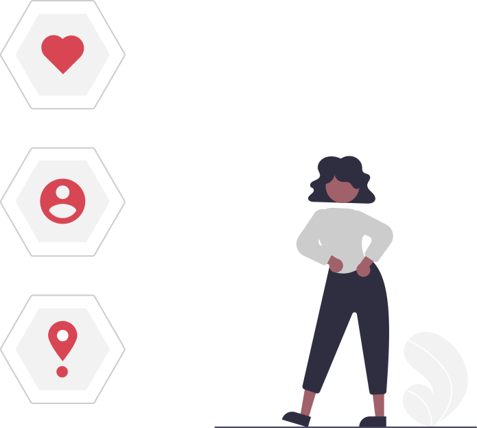

Privacy
Il principio fondamentale su cui si basa il concetto di privacy risiede nel diritto, che tutti noi abbiamo, che i nostri dati personali siano adeguatamente protetti. Non solo: ad oggi, il concetto di Privacy include non soltanto il diritto alla riservatezza ma anche quello di scelta circa l’uso che vogliamo che terze parti facciano dei nostri dati. Per la normativa Privacy il dato personale è definibile come “qualunque informazione relativa a una persona fisica, persona giuridica, ente o associazione, identificati o identificabili, anche indirettamente, mediante riferimento a qualsiasi altra informazione, ivi compreso un numero di identificazione personale”. Qualche esempio pratico? Sono dati personali il tuo nome e cognome, il tuo numero di telefono, il tuo codice fiscale, la partita IVA, il tuo indirizzo. In pratica, si tratta di informazioni sensibili che permettono l’identificazione di un soggetto, sia diretta che indiretta, e possono comprendere non solo dati anagrafici ed economici, ma anche suoni, immagini e codici identificativi. Cominci a comprendere perché è tanto utile e importante conoscere bene il concetto di Privacy e applicare i diritti che la normativa ti offre?

Lo sai?
Non vi è dubbio che il bisogno di riservatezza sia insito nella natura umana. Fin dalle sue origini, infatti, l'uomo ha manifestato la necessità di proteggersi e tutelarsi dai pericoli derivanti dall'esterno (intemperie, animali, nemici), di creare un proprio spazio intimo e sicuro sia da un punto di vista materiale che relazionale. Con l'evoluzione della coscienza di sé; e lo sviluppo della civiltà, la riservatezza assume valore come esigenza di separazione tra la vita pubblica e quella privata, come necessità di avere uno spazio intimo in cui coltivare la propria identità (sociale, religiosa, politica) . In questa sua accezione originaria, quindi, la Privacy è costruita, come tutti i diritti afferenti alla tutela della vita privata (vedi ad esempio la tutela del domicilio) sul modello del diritto di proprietà, ed è concepita come il diritto del singolo di tutelare il proprio spazio di intimità dalla curiosità e dal controllo altrui
Con lo sviluppo della tecnologia, in particolar modo nel settore delle comunicazioni a distanza (dai telefoni cellulari ad internet) ed in quello dell’archiviazione delle informazioni, il rischio di ingerenza altrui nella propria sfera personale cresce in via esponenziale e si manifesta la necessità di porre dei limiti alla raccolta e all’uso delle informazioni personali. In tale contesto, quindi, il diritto alla riservatezza si sdoppia, cosicché alla privacy di cui sin ora abbiamo parlato si affianca il diritto alla protezione dei dati personali più strettamente connesso alla tecnologia digitale, in quanto teso a tutelare gli individui dai rischi derivanti da sistemi di diffusione dei dati personali sempre più veloci e dalle tecniche sempre più sofisticate di utilizzo degli stessi per i fini più disparati (marketing, fidelizzazione, controllo sociale, influenza dell’opinione pubblica ecc.).